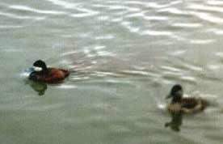

Ruddy Duck
An unusual visitor to the reservoir. Due to interbreeding with White-headed Ducks possibly threatening that species, the Ruddy Duck, that was accidentally introduced from the USA, has been subject to an eradication program in Europe since 2005. As of March 2015 it was thought that about 40 birds remained in the UK with only 10 of those being females.

09/07/81 - Single male. Remained until 21/07
23/01/82 - 5 birds. Record count to date
12/08/84 - 2 females
22/03/85 - 2 males & a female, remaining through until 20/05
01/12/85 - Single female. Remaining over into beginning of 1986
(18/01/86 - Single female from above record)
09/03/86 - Single male
30/08/86 - Single male
02/01/87 - 2 birds
19/10/88 - Single female
24/12/94 - Single female, for one day only
07/01/97 - Single male in eclipse plumage. (BS)
03/10/97 - Pair
08/09/98 - Single female or imm. For one day only
30/10/98 - Single female or imm
08/01/99 - Single female or imm
05/10/99 - 4 birds
26/10/99 - Single female (KGH). Seen again on 27/10 (DWH)
01/01/01 - Single female
08/04/04 - Single imm male
24/09/05 - Single immature bird stayed 2 days